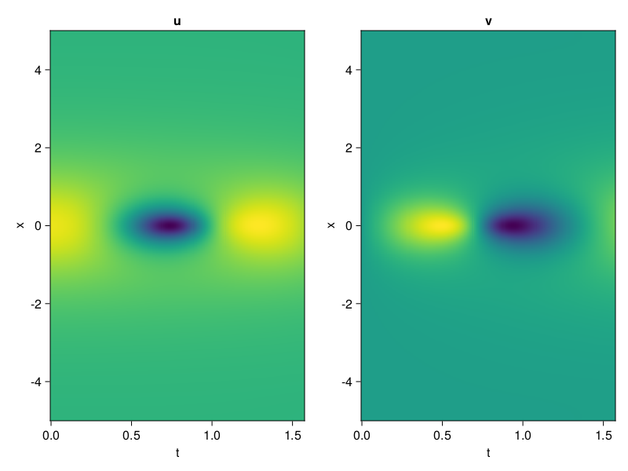
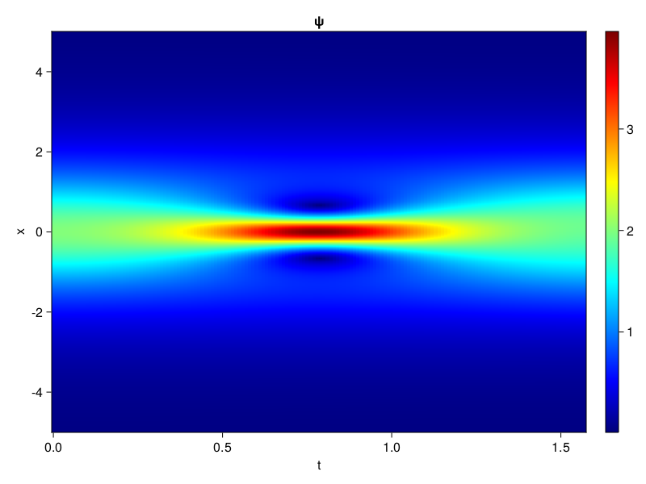
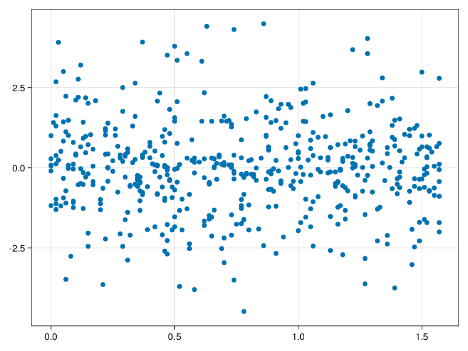

Schrödinger equation
The nonlinear Shrödinger equation is given by
\[\mathrm{i} \partial_t \psi=-\frac{1}{2} \sigma \partial_{x x} \psi-\beta|\psi|^2 \psi\]
Let $\sigma=\beta=1, \psi=u+v i$, the equation can be transformed into a system of partial differential equations
using ModelingToolkit, IntervalSets, Sophon, CairoMakie
using Optimization, OptimizationOptimJL
@parameters x,t
@variables u(..), v(..)
Dₜ = Differential(t)
Dₓ² = Differential(x)^2
eqs=[Dₜ(u(x,t)) ~ -Dₓ²(v(x,t))/2 - (abs2(v(x,t)) + abs2(u(x,t))) * v(x,t),
Dₜ(v(x,t)) ~ Dₓ²(u(x,t))/2 + (abs2(v(x,t)) + abs2(u(x,t))) * u(x,t)]
bcs = [u(x, 0.0) ~ 2sech(x),
v(x, 0.0) ~ 0.0,
u(-5.0, t) ~ u(5.0, t),
v(-5.0, t) ~ v(5.0, t)]
domains = [x ∈ Interval(-5.0, 5.0),
t ∈ Interval(0.0, π/2)]
@named pde_system = PDESystem(eqs, bcs, domains, [x,t], [u(x,t),v(x,t)])\[ \begin{align} \frac{\mathrm{d}}{\mathrm{d}t} u\left( x, t \right) =& - \frac{1}{2} \frac{\mathrm{d}}{\mathrm{d}x} \frac{\mathrm{d}}{\mathrm{d}x} v\left( x, t \right) - \left( \left|u\left( x, t \right)\right|^{2} + \left|v\left( x, t \right)\right|^{2} \right) v\left( x, t \right) \\ \frac{\mathrm{d}}{\mathrm{d}t} v\left( x, t \right) =& \frac{1}{2} \frac{\mathrm{d}}{\mathrm{d}x} \frac{\mathrm{d}}{\mathrm{d}x} u\left( x, t \right) + \left( \left|u\left( x, t \right)\right|^{2} + \left|v\left( x, t \right)\right|^{2} \right) u\left( x, t \right) \end{align} \]
pinn = PINN(u = Siren(2,1; hidden_dims=16,num_layers=4, omega = 1.0),
v = Siren(2,1; hidden_dims=16,num_layers=4, omega = 1.0))
sampler = QuasiRandomSampler(500, (200,200,20,20))
strategy = NonAdaptiveTraining(1,(10,10,1,1))
prob = Sophon.discretize(pde_system, pinn, sampler, strategy)OptimizationProblem. In-place: true
u0: ComponentVector{Float64}(u = (layer_1 = (weight = [0.41829854249954224 -0.2942240238189697; 0.48194849491119385 -0.27077072858810425; … ; 0.11181813478469849 0.2309914231300354; -0.41661328077316284 0.4048774242401123], bias = [0.0; 0.0; … ; 0.0; 0.0;;]), layer_2 = (weight = [-0.1262359321117401 0.1813676506280899 … 0.21361596882343292 0.5772054195404053; -0.40195712447166443 0.3905161917209625 … -0.6072695255279541 0.5398558974266052; … ; -0.06633378565311432 -0.5193569660186768 … 0.3743263781070709 0.10442915558815002; -0.2740766406059265 0.5018137693405151 … 0.4238439202308655 0.48438072204589844], bias = [0.0; 0.0; … ; 0.0; 0.0;;]), layer_3 = (weight = [-0.24080215394496918 -0.04720787703990936 … -0.10598757117986679 -0.016909319907426834; 0.5939463973045349 -0.4397002160549164 … 0.07712668180465698 0.3226865828037262; … ; 0.514057993888855 0.18410880863666534 … -0.3959387540817261 -0.03303702175617218; -0.2006353884935379 0.4814044237136841 … 0.5716358423233032 0.1454400271177292], bias = [0.0; 0.0; … ; 0.0; 0.0;;]), layer_4 = (weight = [-0.05900854989886284 -0.4018000364303589 … -0.5299767851829529 0.4594653844833374; 0.03769146278500557 -0.5122491121292114 … -0.3699839413166046 -0.45756810903549194; … ; -0.4047837257385254 0.3219200670719147 … -0.11259834468364716 0.5351769328117371; 0.0805014967918396 -0.1392652690410614 … 0.5897310972213745 -0.060786038637161255], bias = [0.0; 0.0; … ; 0.0; 0.0;;]), layer_5 = (weight = [0.15785937011241913 -0.5996025204658508 … -0.49260833859443665 0.573900043964386], bias = [0.0;;])), v = (layer_1 = (weight = [-0.2860131859779358 0.3319917321205139; 0.4338386058807373 0.29046064615249634; … ; -0.3639693856239319 -0.19041752815246582; -0.20575982332229614 -0.012694001197814941], bias = [0.0; 0.0; … ; 0.0; 0.0;;]), layer_2 = (weight = [0.11973743140697479 -0.37767988443374634 … -0.05961386859416962 0.56501704454422; 0.5602983236312866 0.14519204199314117 … 0.47734150290489197 -0.361931711435318; … ; 0.18829494714736938 0.2779613733291626 … 0.10996821522712708 0.31891411542892456; 0.20725858211517334 -0.29243794083595276 … -0.5114218592643738 0.03723849356174469], bias = [0.0; 0.0; … ; 0.0; 0.0;;]), layer_3 = (weight = [0.4329962730407715 -0.3972565531730652 … -0.1182057335972786 0.029879607260227203; 0.32388341426849365 0.3418574333190918 … 0.42777666449546814 -0.5736624598503113; … ; -0.2310389280319214 0.44003650546073914 … -0.3119407594203949 0.03658711165189743; -0.2112518548965454 -0.5530659556388855 … 0.08882048726081848 0.26541316509246826], bias = [0.0; 0.0; … ; 0.0; 0.0;;]), layer_4 = (weight = [-0.36896347999572754 -0.05600019916892052 … -0.12388699501752853 -0.18227380514144897; -0.03680158406496048 0.07837995886802673 … 0.2829883396625519 0.06703904271125793; … ; 0.014039598405361176 -0.35390931367874146 … 0.12006140500307083 0.2651797831058502; 0.4434746205806732 0.3456546366214752 … -0.12636259198188782 0.41564062237739563], bias = [0.0; 0.0; … ; 0.0; 0.0;;]), layer_5 = (weight = [0.5630332827568054 0.03194376826286316 … 0.2006763517856598 -0.39963388442993164], bias = [0.0;;])))Now we train the neural nets and resample data while training.
function train(pde_system, prob, sampler, strategy, resample_period = 500, n=10)
bfgs = BFGS()
res = Optimization.solve(prob, bfgs; maxiters=2000)
for i in 1:n
data = Sophon.sample(pde_system, sampler)
prob = remake(prob; u0=res.u, p=data)
res = Optimization.solve(prob, bfgs; maxiters=resample_period)
end
return res
end
res = train(pde_system, prob, sampler, strategy)u: ComponentVector{Float64}(u = (layer_1 = (weight = [1.3011065471318186 0.4856729976076125; 1.2983531570258426 -0.534176244006021; … ; 0.15893060002188675 0.017578090715403855; -0.40594911404491973 0.07238171001861773], bias = [-0.3161295319086953; 0.1456253763923227; … ; 0.21707055566697703; 0.21993821124031535;;]), layer_2 = (weight = [-0.03384828513558331 0.10648050087950582 … 0.26195046404766054 0.583449485913572; -0.07764958168311924 0.5262302445328877 … -0.538625722429153 0.39485389970803403; … ; -0.2400766835530185 -0.026258069745954928 … 0.1625340273682406 -0.006517884069922342; -0.015376807348428683 0.5841751058668488 … 0.4130311112847173 0.3337462482648891], bias = [0.243765979121711; 0.27851898877174197; … ; 0.005718281229369054; 0.237308676046585;;]), layer_3 = (weight = [0.020736845904200323 -0.051171800525916 … -0.22434892852180396 0.036770428013211426; 0.29613853708426247 -0.48996894383408135 … 0.04664886754888664 0.3823340226747567; … ; 0.884539978096508 -0.026870332008131534 … -0.33707473164516405 -0.22041340960222044; -0.08902053613759418 0.20545222578907749 … 0.4343446836988093 0.37945605002842453], bias = [0.10364745194257463; 0.00259750647139898; … ; 0.5411432429848725; 0.1213601068610174;;]), layer_4 = (weight = [0.048797173526910896 -0.3313322912005488 … -0.6181978606396981 0.376853098954124; 0.4836020990199427 -0.36934201479641937 … -0.6565773698581302 -0.1337364005866622; … ; -0.2782334508614989 1.1456993932322428 … -0.21489884989589345 0.5633096657198619; -0.17100723060756579 -0.31883243786668347 … 0.6175289777390485 -0.044749786821941265], bias = [0.08933337063204332; -0.40306798488645007; … ; 0.29710598428044205; 0.4483978420669937;;]), layer_5 = (weight = [0.39272181872401163 -0.6559192462950219 … -0.5935966976332796 0.8007115664239766], bias = [-0.6963758489668326;;])), v = (layer_1 = (weight = [-0.32955376425426247 0.03515199420303348; 1.1927188030730793 0.08400965800572421; … ; -1.0706925729977874 0.48754865977188633; -0.19891777973404906 -0.3791233423990178], bias = [0.17956893187529646; -0.0381216153405942; … ; -0.07602372728258297; 0.20089086478794474;;]), layer_2 = (weight = [0.05162996318595097 -0.45621844317381544 … 0.12271349772422703 0.5629614059987873; 0.46948285028147596 0.1117847372753794 … 0.560093802878179 -0.26494634807973505; … ; -0.09196225834639948 -0.0014052856218901752 … 0.199557985037463 0.3766025072095509; 0.4365150875152454 -0.5302478986726309 … -0.2888242180172188 0.26196546518137354], bias = [-0.05420552423818068; 0.43782895040991654; … ; -0.3136742548259848; 0.39068130012106517;;]), layer_3 = (weight = [0.2669272812633397 -0.23668605304495324 … 0.023074724667575444 -0.15007752189747176; 0.293719024974584 0.1929589645261737 … 0.32525968837933644 -0.19805447144682253; … ; -0.6531287548457131 0.5875645552947162 … -0.17607812535799797 -0.1101609905130762; -0.4917593486950609 -0.624949091731326 … -0.04153085470436832 0.7836800284338263], bias = [-0.30089203786958635; -0.13539001257855976; … ; 0.15958091501253782; -0.1982650653254854;;]), layer_4 = (weight = [-0.43972972736285765 -0.15343905943355876 … 0.06665044353914404 -0.19116374073559458; 0.019504825716274113 0.3401117242893129 … -0.006891364543667813 -0.1207287837792289; … ; 0.12660019400111377 -0.1792790727219126 … 0.029801344081711322 0.23448435426142777; 0.8498213551516471 0.5673664425094144 … 0.009917905921581795 0.14963336936060584], bias = [0.5334839418471125; -0.07625348388357416; … ; 0.1779680851676314; 0.16551195459509976;;]), layer_5 = (weight = [1.3294575854695903 -0.5273833581873967 … 0.13510079987272863 -0.3504702371459013], bias = [-0.24116430353363533;;])))phi = pinn.phi
ps = res.u
xs, ts= [infimum(d.domain):0.01:supremum(d.domain) for d in pde_system.domain]
u = [sum(phi.u(([x,t]), ps.u)) for x in xs, t in ts]
v = [sum(phi.v(([x,t]), ps.v)) for x in xs, t in ts]
ψ = @. sqrt(u^2+ v^2)
axis = (xlabel="t", ylabel="x", title="u")
fig, ax1, hm1 = heatmap(ts, xs, u', axis=axis)
ax2, hm2= heatmap(fig[1, end+1], ts, xs, v', axis= merge(axis, (; title="v")))
display(fig)
axis = (xlabel="t", ylabel="x", title="ψ")
fig, ax1, hm1 = heatmap(ts, xs, ψ', axis=axis, colormap=:jet)
Colorbar(fig[:, end+1], hm1)
display(fig)
Customize Sampling
Bascially any sampling method is supportted. For example we can sample data according to the predicted solution.
using StatsBase
data = vec([[x, t] for x in xs, t in ts])
wv = vec(ψ)
new_data = wsample(data, wv, 500)
new_data = reduce(hcat, new_data)
fig, ax = scatter(new_data[2,:], new_data[1,:])
prob.p[1] = new_data
prob.p[2] = new_data
prob = remake(prob; u0 = res.u)
# res = Optimization.solve(prob, bfgs; maxiters=1000)OptimizationProblem. In-place: true
u0: ComponentVector{Float64}(u = (layer_1 = (weight = [1.3011065471318186 0.4856729976076125; 1.2983531570258426 -0.534176244006021; … ; 0.15893060002188675 0.017578090715403855; -0.40594911404491973 0.07238171001861773], bias = [-0.3161295319086953; 0.1456253763923227; … ; 0.21707055566697703; 0.21993821124031535;;]), layer_2 = (weight = [-0.03384828513558331 0.10648050087950582 … 0.26195046404766054 0.583449485913572; -0.07764958168311924 0.5262302445328877 … -0.538625722429153 0.39485389970803403; … ; -0.2400766835530185 -0.026258069745954928 … 0.1625340273682406 -0.006517884069922342; -0.015376807348428683 0.5841751058668488 … 0.4130311112847173 0.3337462482648891], bias = [0.243765979121711; 0.27851898877174197; … ; 0.005718281229369054; 0.237308676046585;;]), layer_3 = (weight = [0.020736845904200323 -0.051171800525916 … -0.22434892852180396 0.036770428013211426; 0.29613853708426247 -0.48996894383408135 … 0.04664886754888664 0.3823340226747567; … ; 0.884539978096508 -0.026870332008131534 … -0.33707473164516405 -0.22041340960222044; -0.08902053613759418 0.20545222578907749 … 0.4343446836988093 0.37945605002842453], bias = [0.10364745194257463; 0.00259750647139898; … ; 0.5411432429848725; 0.1213601068610174;;]), layer_4 = (weight = [0.048797173526910896 -0.3313322912005488 … -0.6181978606396981 0.376853098954124; 0.4836020990199427 -0.36934201479641937 … -0.6565773698581302 -0.1337364005866622; … ; -0.2782334508614989 1.1456993932322428 … -0.21489884989589345 0.5633096657198619; -0.17100723060756579 -0.31883243786668347 … 0.6175289777390485 -0.044749786821941265], bias = [0.08933337063204332; -0.40306798488645007; … ; 0.29710598428044205; 0.4483978420669937;;]), layer_5 = (weight = [0.39272181872401163 -0.6559192462950219 … -0.5935966976332796 0.8007115664239766], bias = [-0.6963758489668326;;])), v = (layer_1 = (weight = [-0.32955376425426247 0.03515199420303348; 1.1927188030730793 0.08400965800572421; … ; -1.0706925729977874 0.48754865977188633; -0.19891777973404906 -0.3791233423990178], bias = [0.17956893187529646; -0.0381216153405942; … ; -0.07602372728258297; 0.20089086478794474;;]), layer_2 = (weight = [0.05162996318595097 -0.45621844317381544 … 0.12271349772422703 0.5629614059987873; 0.46948285028147596 0.1117847372753794 … 0.560093802878179 -0.26494634807973505; … ; -0.09196225834639948 -0.0014052856218901752 … 0.199557985037463 0.3766025072095509; 0.4365150875152454 -0.5302478986726309 … -0.2888242180172188 0.26196546518137354], bias = [-0.05420552423818068; 0.43782895040991654; … ; -0.3136742548259848; 0.39068130012106517;;]), layer_3 = (weight = [0.2669272812633397 -0.23668605304495324 … 0.023074724667575444 -0.15007752189747176; 0.293719024974584 0.1929589645261737 … 0.32525968837933644 -0.19805447144682253; … ; -0.6531287548457131 0.5875645552947162 … -0.17607812535799797 -0.1101609905130762; -0.4917593486950609 -0.624949091731326 … -0.04153085470436832 0.7836800284338263], bias = [-0.30089203786958635; -0.13539001257855976; … ; 0.15958091501253782; -0.1982650653254854;;]), layer_4 = (weight = [-0.43972972736285765 -0.15343905943355876 … 0.06665044353914404 -0.19116374073559458; 0.019504825716274113 0.3401117242893129 … -0.006891364543667813 -0.1207287837792289; … ; 0.12660019400111377 -0.1792790727219126 … 0.029801344081711322 0.23448435426142777; 0.8498213551516471 0.5673664425094144 … 0.009917905921581795 0.14963336936060584], bias = [0.5334839418471125; -0.07625348388357416; … ; 0.1779680851676314; 0.16551195459509976;;]), layer_5 = (weight = [1.3294575854695903 -0.5273833581873967 … 0.13510079987272863 -0.3504702371459013], bias = [-0.24116430353363533;;])))